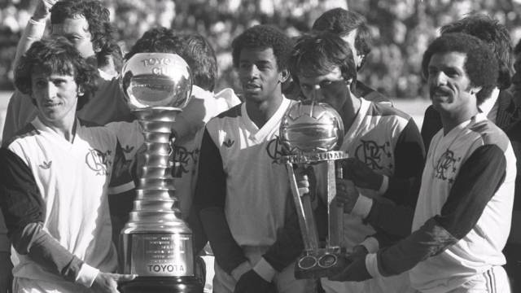

In 1956, de Brito took Pelé to Santos, an industrial and port city located near São Paulo, to try out for professional club Santos FC, telling the directors at Santos that the 15-year-old would be "the greatest football player in the world." Pelé impressed Santos coach Lula during his trial at the Estádio Vila Belmiro, and he signed a professional contract with the club in June 1956.[16] Pelé was highly promoted in the local media as a future superstar. He made his senior team debut on 7 September 1956 at the age of 15 against Corinthians Santo Andre and had an impressive performance in a 7–1 victory, scoring the first goal in his prolific career during the match.When the 1957 season started, Pelé was given a starting place in the first team and, at the age of 16, became the top scorer in the league. Ten months after signing professionally, the teenager was called up to the Brazil national team. After the 1958 and the 1962 World Cup, wealthy European clubs, such as Real Madrid, Juventus and Manchester United,[19] tried to sign him in vain; in 1958 Inter Milan even managed to get him a regular contract, but Angelo Moratti was forced to tear the contract up at the request of Santos' chairman following a revolt by Santos' Brazilian fans. In 1961 the government of Brazil under President Jânio Quadros declared Pelé an "official national treasure" to prevent him from being transferred out of the country.
Pelé won his first major title with Santos in 1958 as the team won the Campeonato Paulista; Pelé would finish the tournament as top scorer with 58 goals,[22] a record that stands today. A year later, he would help the team earn their first victory in the Torneio Rio-São Paulo with a 3–0 over Vasco da Gama.[23] However, Santos was unable to retain the Paulista title. In 1960, Pelé scored 33 goals to help his team regain the Campeonato Paulista trophy but lost out on the Rio-São Paulo tournament after finishing in 8th place.[24] In the 1960 season, Pelé scored 47 goals and helped Santos regain the Campeonato Paulista. The club went on to win the Taça Brasil that same year, beating Bahia in the finals; Pelé finished as top scorer of the tournament with 9 goals. The victory allowed Santos to participate in the Copa Libertadores, the most prestigious club tournament in the Western hemisphere.
Pelé states that his most memorable goal was scored at Rua Javari stadium on a Campeonato Paulista match against São Paulo rival Clube Atlético Juventus on 2 August 1959. As there is no video footage of this match, Pelé asked that a computer animation be made of this specific goal.[36] In March 1961, Pelé scored the gol de placa (goal worthy of a plaque), against Fluminense at the Maracanã.[37] Pelé received the ball on the edge of his own penalty area, and ran the length of the field, eluding opposition players with feints, before striking the ball beyond the goalkeeper. A plaque was commissioned with a dedication to "the most beautiful goal in the history of the Maracanã".